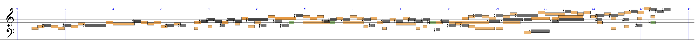

Abstract
Explain models and the evaluation measure rhythm correction cost (RCC).References
[1] Merged-output HMM submitted to SMC 2016.[2] Raphael, Hamanaka
[3] Otsuki, Takeda
Demonstrations
Good examples
Examples in which the merged-output HMM outperformed other HMMs.Bad examples
Examples in which the merged-output HMM performed worse than other HMMs.Example 1 [Bach: The well tempered clavier book II No. 19 A-dur Fugue]
・Input performance ( mp3 MIDI )
・Correct transcription (original score) ( mp3 MIDI )

Upper staff: mp3 MIDI
Lower staff: mp3 MIDI
・Result by merged-output HMM ( Upper staff: mp3 MIDI Lower staff: mp3 MIDI ) RCC = 5

・Result by note HMM ( mp3 MIDI ) RCC = 2

・Result by metrical HMM ( mp3 MIDI ) RCC = 0